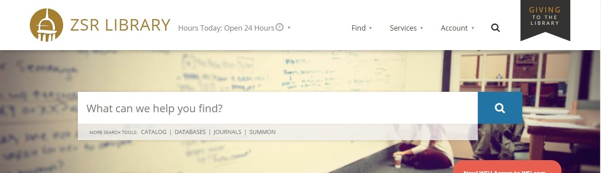
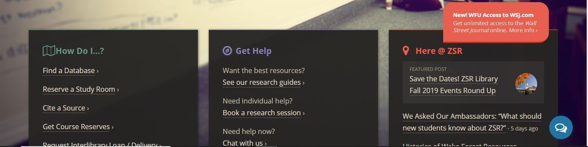
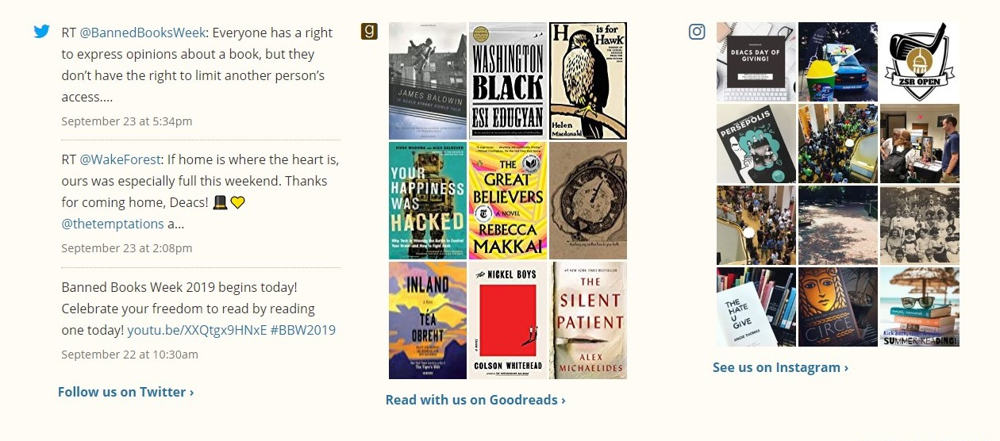
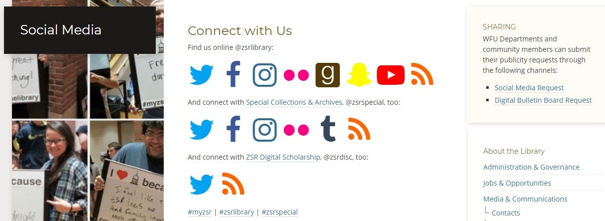

Wake Forest University’s Library website, Z. Smith Reynolds Library (ZSR Library) at zsr.wfu.edu, is effective through its appealing layout and view, research capabilities, and assistance for users. The ZSR Library’s website appears to primarily target new or undergraduate students. The website’s main components entail the following:
These components provide the connection that students need for finding virtual resources for research purposes, getting answers to research questions, and connecting them to the library by news and social media.
Looking at the website from initial glance, the search bar takes up most of the opening page. This search bar for the library is kept separately from Wake Forest University’s overall website search which is placed at the top right as simply a magnifying glass with no search box. Once you click on the magnifying glass, then the search box appears and states “Search this site.” This search bar would be clearer if it said “Search WFU.edu,” but the designers have done well in hiding the search, so it will not distract from the main search bar for the library’s resources. The main search bar also displays a message of “What can we help you find?” which really appeals to the undergraduate student user as an invitation to begin their research at the search bar. The message is helpful in guiding the user’s eyes toward the correct place and in describing what the search bar’s purpose is. One can see the largeness of the main search bar in the picture below:

Other items that assist in the user’s research are the header tabs- Find and Services. These both reinforce that the website and the librarians are there for the user’s assistance and are there to assist in answering questions and in guiding them in their research and in any service they may need from the library. Also “Get Help” and “How Do I…” sections, as pictured below, assist the user further with seeking to predict questions and problems that will need to be addressed for the user. The website focuses largely on new students specifically in the undergraduate program as is seen through the many sections on assistance in every part of the website.
 Lastly, if the website has not answered the student users’ questions, or if the users do not want to take the time to search the website for answers, the website has a small chat symbol at the bottom right of the page. See picture above for reference. The chat bubble is just large enough to notice but not large enough to get in the way when browsing the website. This connects the user to a reference librarian directly. Since the library is open 24 hours on some days, it would appear a very helpful feature when the user may have a question during night hours, and they need an immediate answer.
The website’s components also help undergraduate users connect to the library through news announcements and social media. The picture below demonstrates the three sections of social media regularly displayed for updates from the library.

These features invite users to connect to the library going beyond research and into discovery. If one clicks “More Social Media @ ZSR,” it will take you to even more options for connecting with the library through social media with a total list being the following:
These are referenced using the standard, conventional images for each social media platform as seen in the picture below:

Overall, the website is appealing to the eye, and user friendly for quick access to resources the undergraduate student will need. The website is laid out so research appears to be the primary purpose, and “ask a librarian” or other helpful assisting links are placed in several easy to find sections. There are also other components mentioned, such as news and social media, that invite student users to interact with the library and engage in activities and conversations.